Bimodal Distribution
Simple
Use Stan to generate data with fixed parameters.
A normal distribution, mean: 3, and sigma: 1.
\[ y \sim \text{Normal}(\mu,\sigma) \]
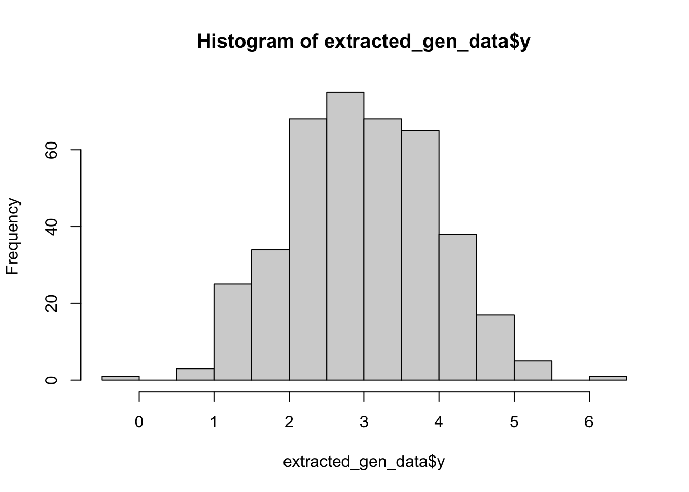
Then use Stan to estimate parameters from this generated data.
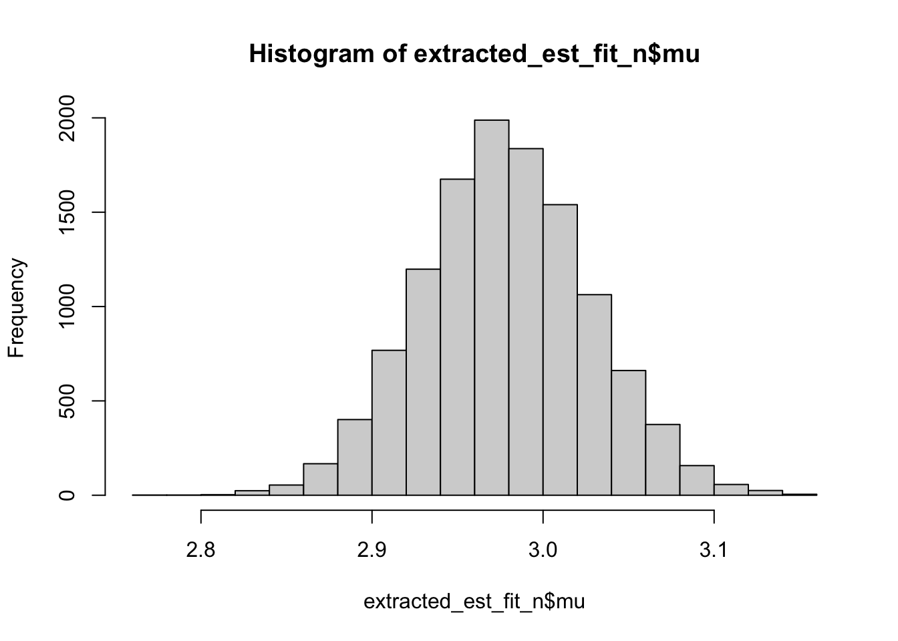
Stan estimates a \(\mu\) of 2.9781, and a \(\sigma\) of 0.9763.
Which is 0.0219, and 0.0237 off reality.
Add samples
More samples probably means better estimates.
Though basically reaches optimality at 100 samples or so, definitely by 250.
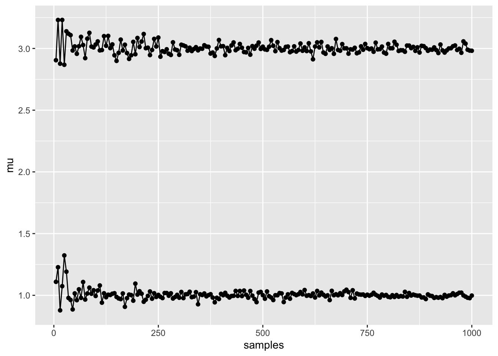
Adding in noise to the signal
Now for some noize.
Adding in an \(\epsilon\) parameter, to add to the normal distribution like in a linear regression.
\[ y \sim \text{Normal}(\mu,\sigma_{\mu}) + \epsilon, ~ \epsilon \sim \text{Normal}(0,\sigma_{\epsilon}) \]
\(\epsilon\) is 10, \(\sigma\) remains 1
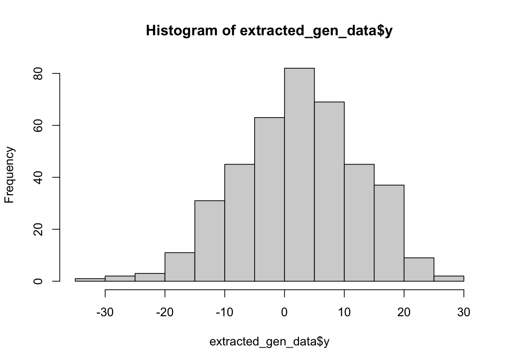
How do the estimates fare with noise.
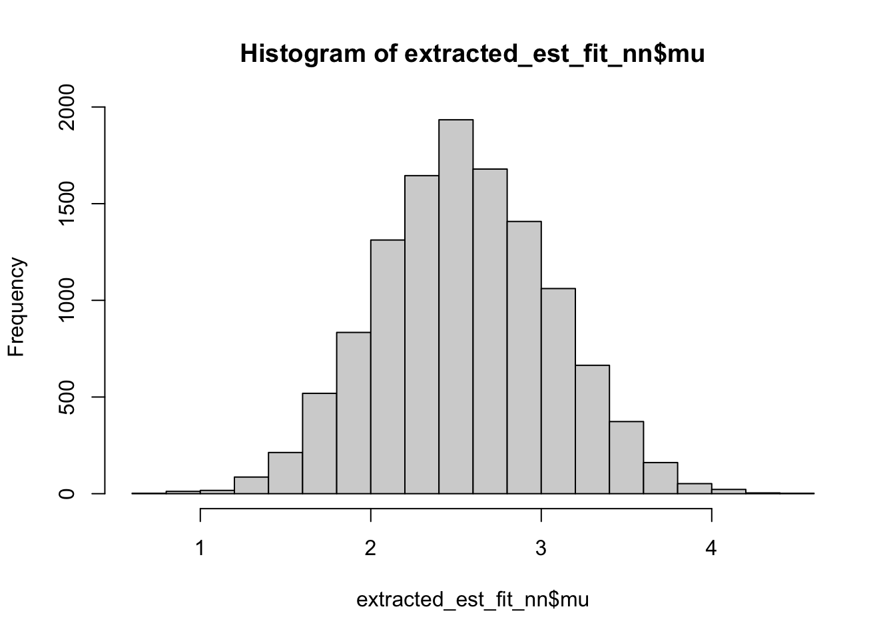
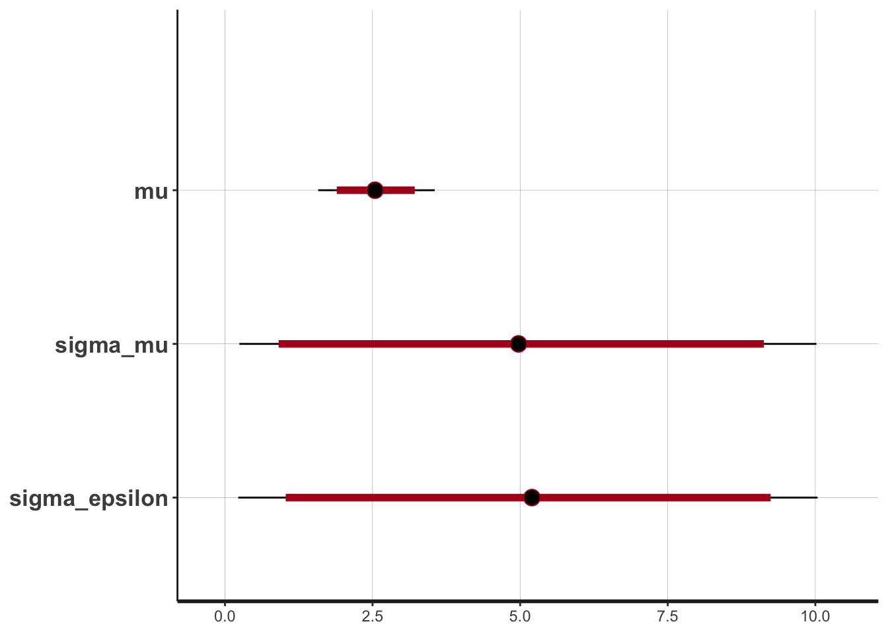
Stan estimates a \(\mu\) of 2.5517, a \(\sigma\) of 5.0032, and an \(\epsilon\) of 5.1733
Which is 0.4483, -4.0032 , and 4.8267off reality.
So it struggles to unpick the noise from signal, i.e. measurement error from internal noise https://www.bmj.com/content/312/7047/1654
Priors
Priors might help.
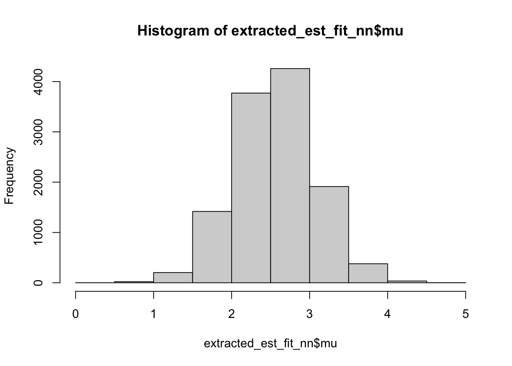
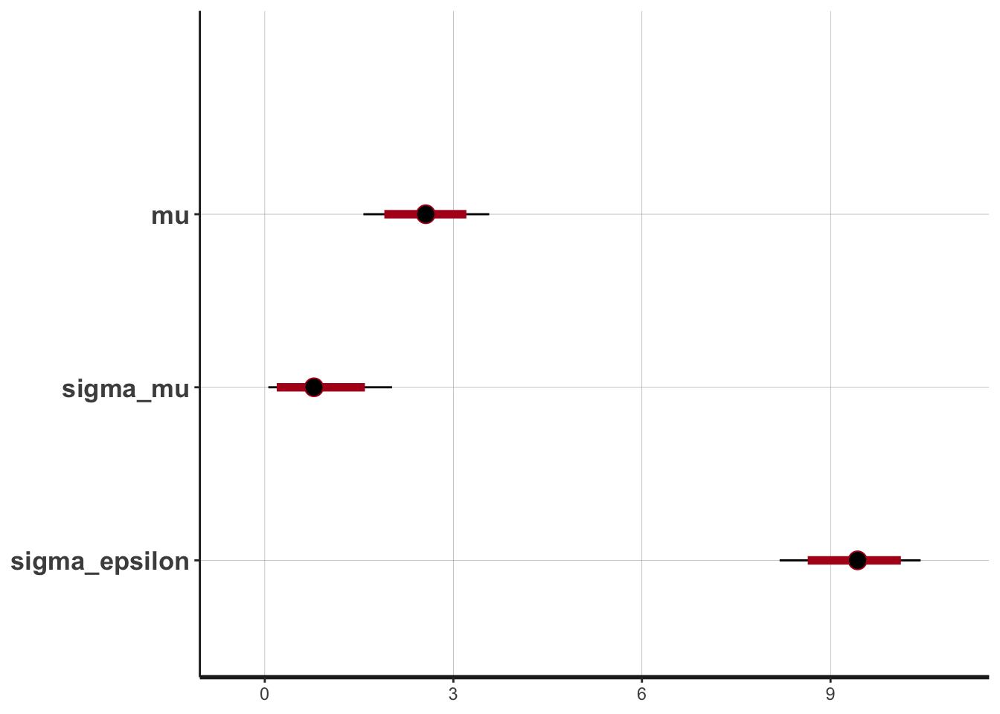
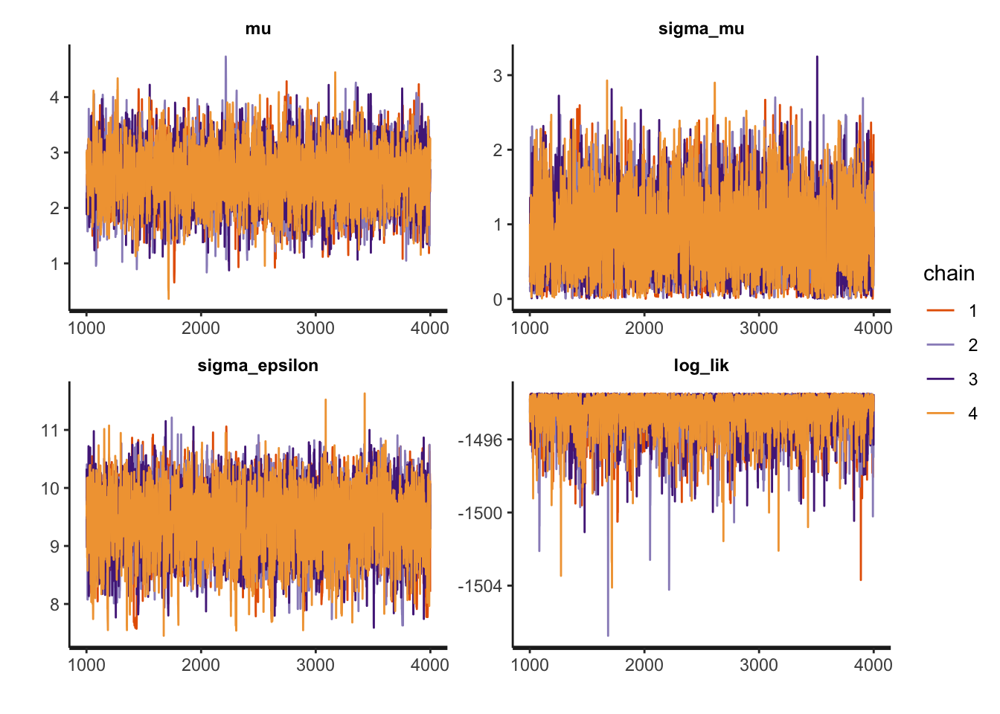
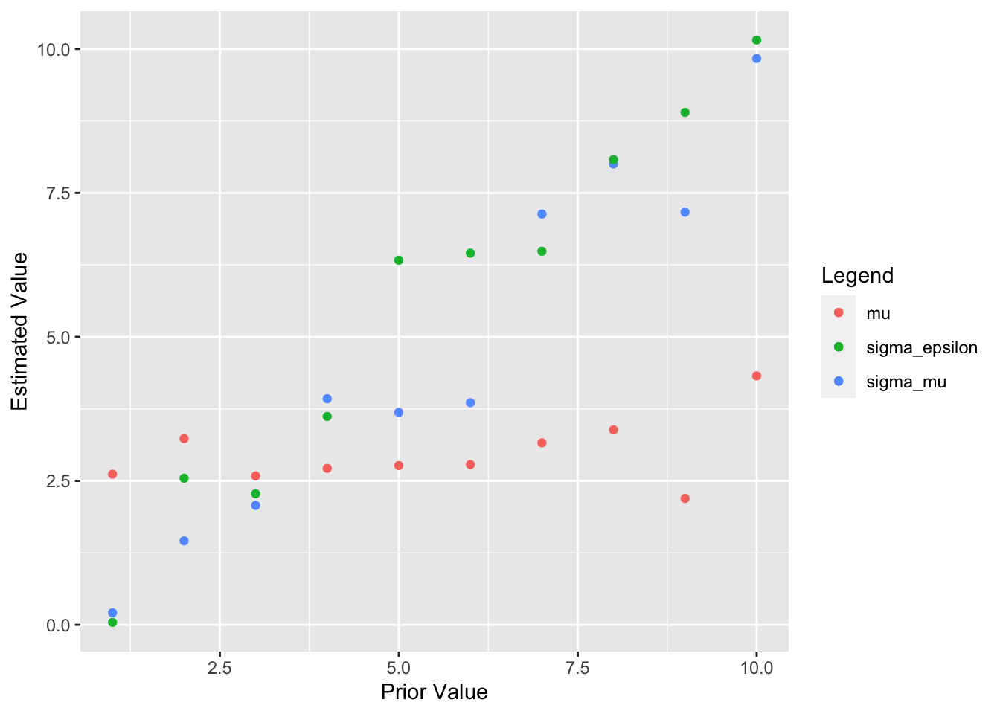
Priors appear far too informative. The model is too basic, with noise on top of noise indistingushable, without another dimension.
A better model exists within the Stan user guide [https://mc-stan.org/docs/stan-users-guide/bayesian-measurement-error-model.html]
Bimodal
Stan can run mixture models. [https://mc-stan.org/docs/stan-users-guide/summing-out-the-responsibility-parameter.html]
You can have a mix of \(K\) normal distributions, with locations \(\mu_k\), scales \(\sigma_k\) and mixing proportions \(\lambda\) within a \(K\)-simplex.
\[ p_y(y~ |~ \lambda,\mu,\sigma) = \sum^{K}_{k=1}\lambda_k ~\text{Normal}(y~|~\mu_k,\sigma_k)\]
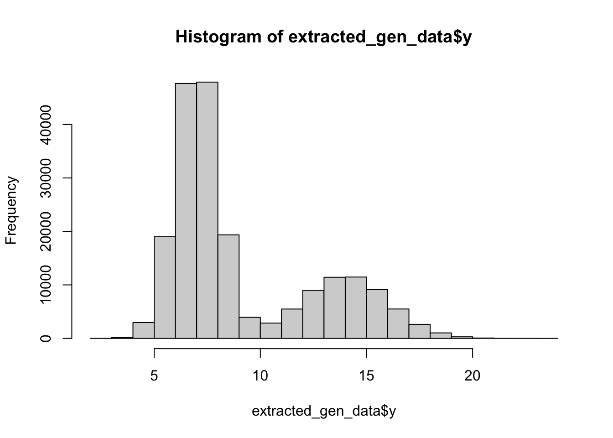
And reverse estimate the parameters I put in.
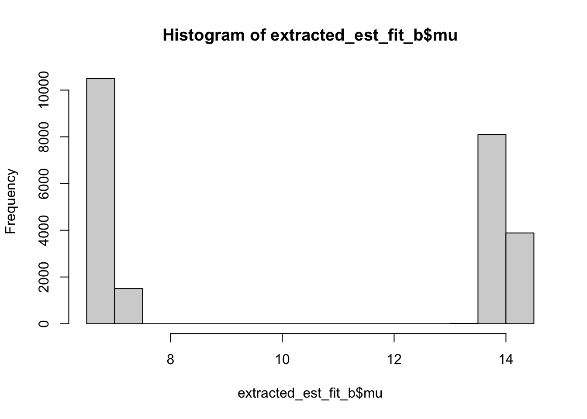
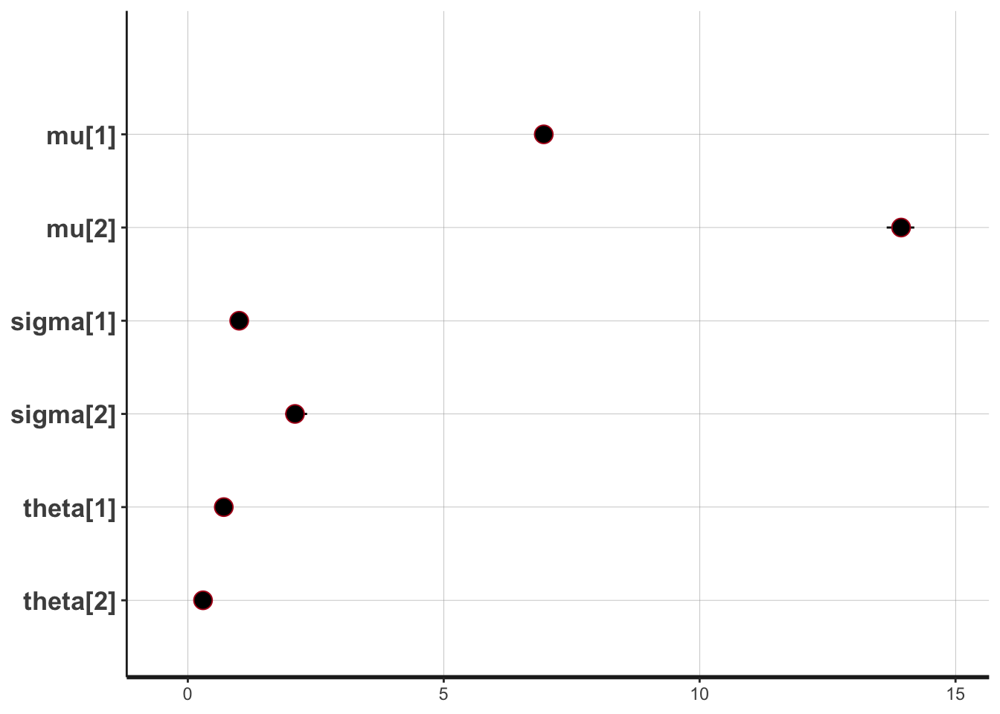
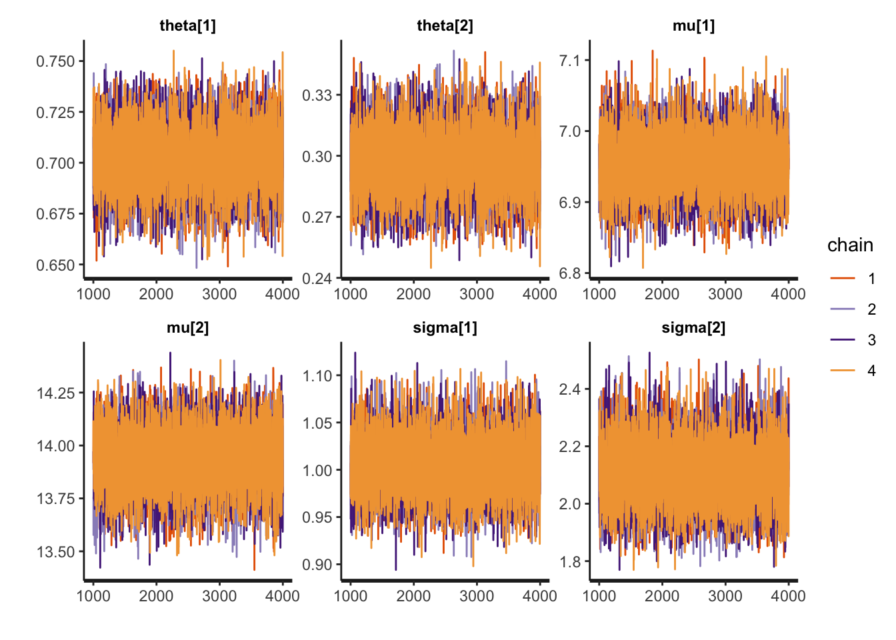
It works, but interestingly, the chains get stuck on one or the other model, so for further analysis, you would have to compare chains rather than models.
When assessing parameter estimates, the mode is probably more useful than the mean or median, given this non mixing.